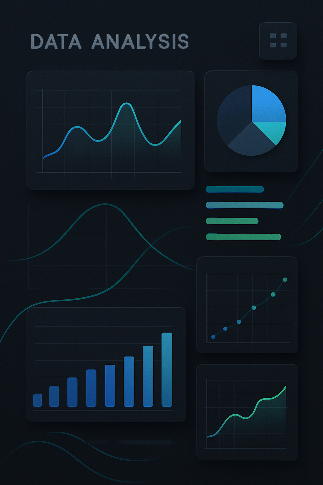
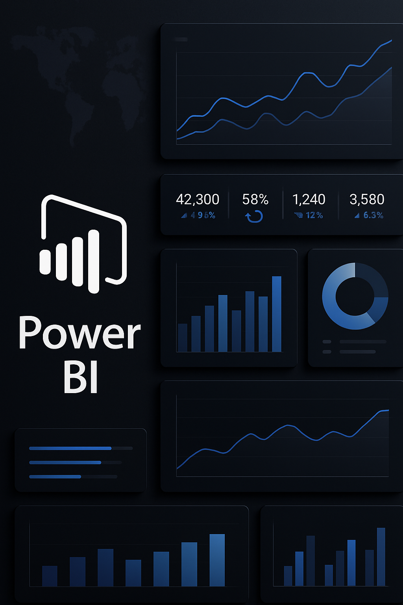

Com mais de 7 anos de experiência em funções institucionais, atuando
como Supervisor Financeiro e de RH, venho integrando gestão e
tecnologia para promover eficiência, inovação e transparência nos
processos.
Estou em transição de carreira, buscando ampliar
minha atuação em áreas tecnológicas
e estratégicas.
Tenho foco em transformar dados em insights de alto valor para
apoiar decisões de negócio.
Pós-graduando em Data Science,
tenho domínio completo em SQL, Power BI, Excel avançado e Python.
Programação
Experiência prática em Python, Java e JavaScript, aplicadas em análise
de dados, automação e desenvolvimento de soluções.
SQL & Manipulação de Dados
Domínio avançado em SQL, criação de queries complexas, manipulação de
grandes volumes de dados e otimização de bancos para melhor performance.
Sistemas ERP
Experiência em sistemas ERP, garantindo integração eficiente entre
processos e dados empresariais.
Finanças & RH
Mais de 4 anos como Supervisor Financeiro e de RH, integrando gestão,
análise de dados e auditoria para apoiar decisões estratégicas e
otimizar processos.
Analisando e transformando dados em ações
Convertendo informações em insights acionáveis, otimizando processos e
impulsionando resultados estratégicos.
Desenvolvendo dashboards eficientes
Criando painéis intuitivos e informativos para monitoramento de KPIs
em tempo real, facilitando decisões rápidas e precisas.
Criando soluções em inteligência artificial
Projetando agentes inteligentes e pipelines de dados, automatizando
processos e extraindo insights valiosos de maneira eficaz.
Portfólio
Nesta aba você encontra projetos que venho desenvolvendo, com foco em
soluções empresariais e analíticas, demonstrando minhas competências
técnicas e estratégicas em cada entrega.

Portfólio Geral
Visão consolidada de todos os projetos desenvolvidos,
centralizando meu trabalho em um único repositório.
Ver detalhes 🔗

Power BI & Dados
Projeto focado em análise de dados utilizando Power BI, SQL e
Excel.
Ver detalhes 🔗
Agentes de IA
Projeto focado no desenvolvimento de agentes inteligentes,
integrando lógica de decisão e automação.
Ver detalhes 🔗